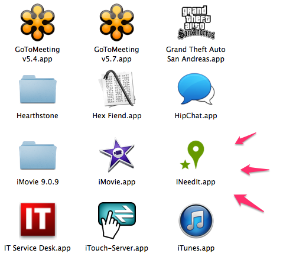
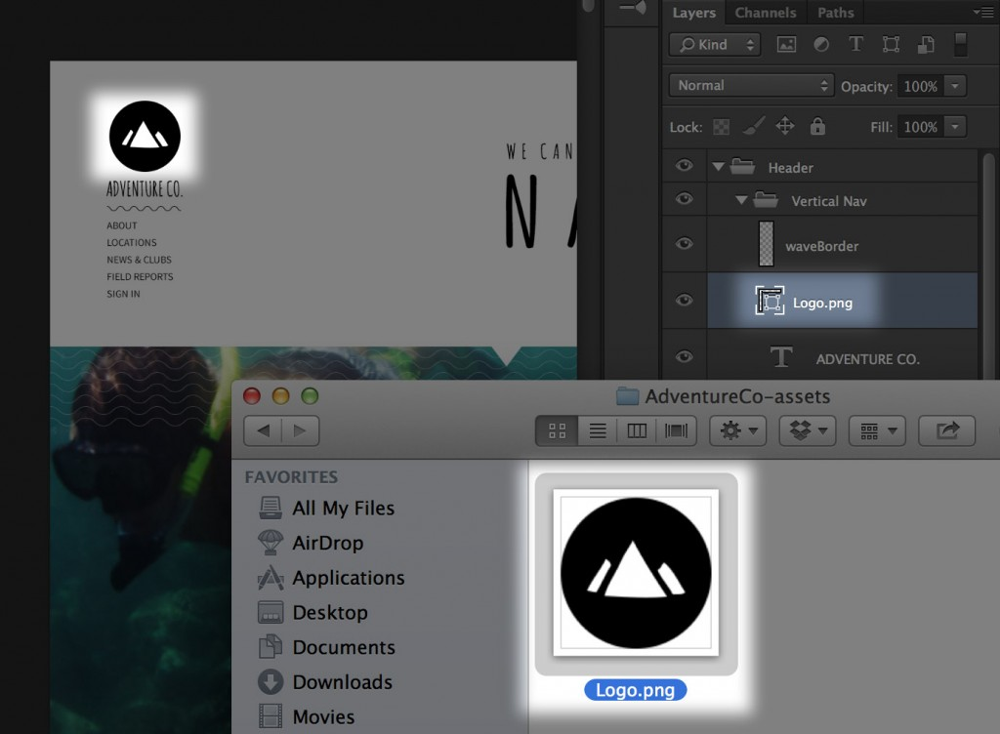

在看完了《HTML 在瀏覽器之外的延伸應用 (上)》說明有關行動裝置上的 HTML 延伸應用之後，你是否對 HTML 有更深一層的認識了呢？可別錯過 HTML 在桌機上的延伸應用，還有原生 App 擴充套件！
桌機
當然，每天還是有人在使用個人電腦或筆記型電腦工作。雖然許多電腦版應用程式已由網頁所取代，但仍有許多功能是 Web App 所不可及，還是有很多時候需要用到桌面版 App。還好，現在有很多方式可透過 Web 標準開發 App。
說到這裡，你還記得我剛剛提到的範例程式碼？這個程式碼可讓 Firefox OS 使用者從網頁上安裝應用程式，也同樣能在桌機上運作無虞。雖然還在開發中 (因為 Geolocation 地理位置功能有臭蟲，所以應用程式還不能運作)，但最後不論是行動 Firefox OS 裝置的消費者，或是眾多的桌機使用者，都能使用你的 Web App。下圖是已經安裝在我自己應用程式資料夾中的 App。

像我剛剛說過的 ─ 這還是非常新的功能，還需要琢磨好一陣子才能真正派上用場。你現在馬上能用的是「Node Webkit」這個開放源碼專案，能讓你把 Node.js 包裝成桌機的應用程式，藉此針對 Windows、Mac、Linux 建構可執行檔。你不但擁有「真正」桌機應用程式的所有功能，還能兼顧簡單易用的Web 標準作為後盾。現在已經有越來越多的實際 App 正使用這個框架，某些我之前用過的 App，原來都是以 Node Webkit 為基礎。
你可以先看看《A Wizard’s Lizard》。這個隨機產生地城的遊戲就不錯玩。

原生 App 擴充套件
前面我們談到以 Web 標準建構的應用程式。但現在也有許多原生 App 能透過 Web 標準而擴充。如果你是Web 開發者，應該已經很熟悉 Firefox 附加元件與 Chrome 擴充套件。瀏覽器擴充套件的豐富程度，幾乎能滿足你想像的任何需求。但我比較感興趣的，其實是未來將如何利用 Web 標準開啟其他產品的大門。
你知道連圖片編輯軟體《Photoshop》現在都能用 Node.js 進一步擴充了嗎？透過「Adobe Generator」這個擴充層 (Extensibility layer)，可為產品構築指令碼介面。其中一個例子，就是能依據簡單的命名方式，從圖層產生 Web 資源 (Asset)。如果你曾經透過 PSD 而手動建立 Web 資源並更新，你就會喜歡這個特性。但整個功能均是以 JavaScript 所撰寫而成，且完全利用公開的 API。可到 GitHub 取得相關範例與程式碼。

下一步？
由於我已經在這個產業待了這麼久的一段時間，我很幸運的「生正逢時」，正好能目睹 Web 標準能對創新與創造力產生如此強大的推力。但是後續的進步與提升就絕不是單靠「幸運」兩字，而是有許多人、公司、組織 (像 Mozilla) 的努力成果，才造就出如此豐沃的土地。為了能持續推動 Web 發展，我們都應該積極參與並鼓勵更多人加入，一同打造出屬於所有人的 Web。